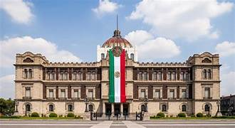
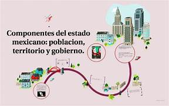
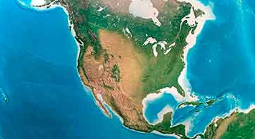

Introducción
El Estado es una organización política y jurídica que ejerce autoridad sobre un territorio determinado y gobierna a una población mediante un conjunto de leyes e instituciones. Es la forma más compleja de organización social, ya que establece normas obligatorias y posee el poder legítimo para hacerlas cumplir.
El concepto de Estado no debe confundirse con el de nación o gobierno. Aunque están relacionados, cada uno tiene un significado distinto dentro de las Ciencias Sociales.
Estado, Nación y Gobierno
Estos tres conceptos suelen utilizarse de manera intercambiable en el lenguaje cotidiano, pero en las Ciencias Sociales cada uno tiene un significado preciso y diferenciado.
Comprender sus diferencias es clave para analizar cómo se organiza el poder en una sociedad y quiénes son los actores involucrados en su ejercicio.
- Estado: Organización política con territorio, población, gobierno y soberanía.
- Nación: Comunidad de personas que comparten identidad cultural, historia, lengua o tradiciones.
- Gobierno: Grupo de personas que administran y dirigen el Estado temporalmente.

Figura 1: Elementos que conforman el Estado

Figura 2: Características principales del Estado
Características del Estado
El Estado posee el monopolio legítimo de la fuerza, lo que significa que es la única institución que puede aplicar sanciones legales, como multas o privación de libertad, cuando se incumplen las leyes.
- Es permanente, aunque cambien los gobiernos.
- Tiene autoridad reconocida dentro y fuera de su territorio.
- Cuenta con instituciones como el poder ejecutivo, legislativo y judicial.
- Establece y hace cumplir leyes.
Ejemplo práctico
En México, aunque cambie el presidente cada seis años, el Estado mexicano continúa existiendo porque sus instituciones, territorio y soberanía permanecen.
Desarrollo del Tema
Comprender el concepto de Estado permite analizar cómo se organiza políticamente una sociedad, cómo se distribuye el poder y cómo se garantizan los derechos y obligaciones de los ciudadanos.
El Estado como organización permanente
A diferencia del gobierno, que cambia periódicamente mediante elecciones u otros mecanismos, el Estado es una entidad permanente. Sus instituciones, leyes y estructura continúan funcionando independientemente de quién esté al frente del poder ejecutivo. Esta permanencia le otorga estabilidad y continuidad a la vida pública de una nación.
El poder legítimo del Estado
Una de las características más importantes del Estado es su capacidad de ejercer la fuerza de manera legítima. Esto significa que, a diferencia de otros grupos o personas, el Estado tiene el derecho reconocido —por la ley y por la sociedad— de aplicar sanciones a quienes incumplan las normas establecidas, garantizando así el orden y la convivencia social.
Ejemplos Visuales

Ejemplo 1: Territorio del Estado
Ejemplo 2: Instituciones del Estado
Ejemplo 3: Soberanía estatal
Conclusión
El Estado es la organización política más compleja y fundamental de la sociedad moderna. Su permanencia, soberanía y capacidad de hacer cumplir las leyes lo distinguen del gobierno y de la nación, con quienes coexiste pero no se confunde.
Entender este concepto es esencial para comprender cómo se organiza el poder, cómo se protegen los derechos ciudadanos y cómo funciona la vida pública en cualquier sociedad contemporánea.